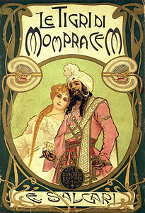

1.

Le tigri di Mompracem - Emilio Salgari
Sicuramente tutti Sandokan, il famoso pirata che, da bambini, ci accompagnava la mattina prima di scuola o la sera al ritorno. Giungle, tigri e sciabole, in realtà Salgari ci illustra anche la cultura dei paesi mediorientali, facendoci scoprire mondi nuovi.
Scopri di più...